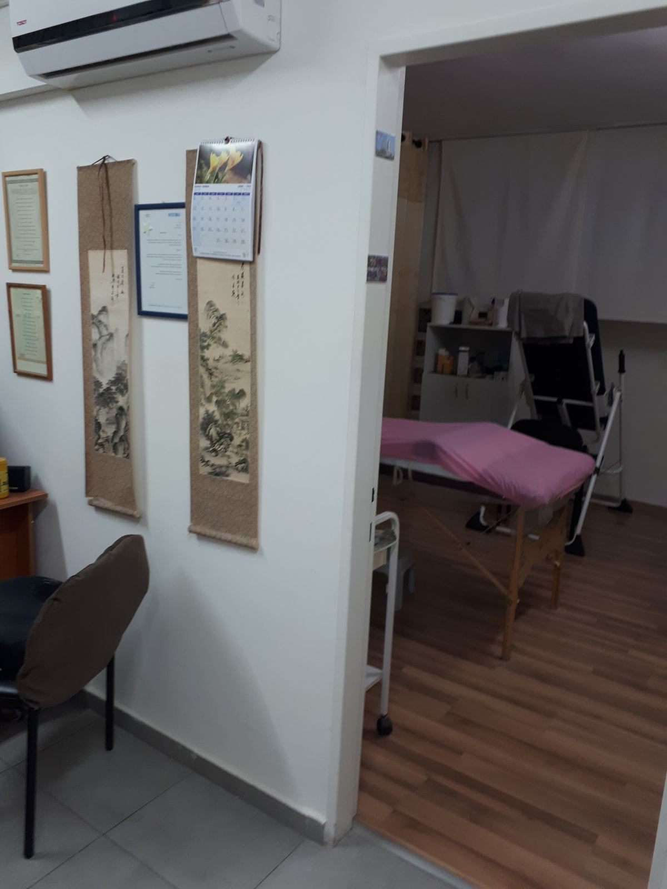
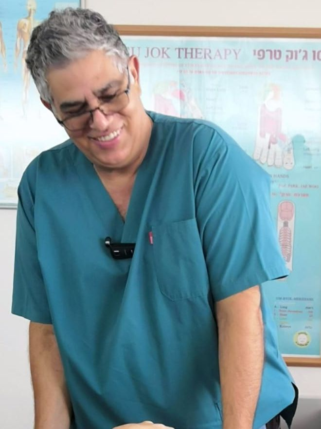
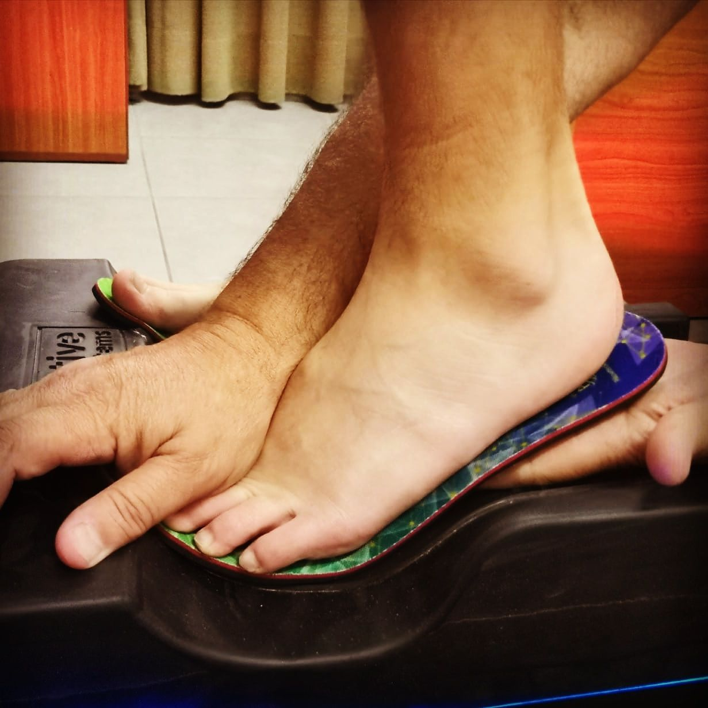

המרפאה של בני בקיש בחיפה: כאבי גב וצוואר, בלט ופריצת דיסק, בעיות אורטופדיות, מיגרנות ומדרסים בהתאמה אישית.Benny Bakish’s clinic in Haifa: back and neck pain, bulging and herniated discs, orthopaedic problems, migraines and custom insoles.
דרך הגבDerech HaGav חוליה אחר חוליהvertebra by vertebra
נעים להכיר, בניMeet Benny
יליד חיפה. מטפל בבעיות כאב בשיטה שפיתח בעצמו, B&B: Body & Brain, ואם תרצו, גם בני בקיש.Born in Haifa. He treats pain with a method he developed himself, B&B: Body & Brain, or, if you like, Benny Bakish.
מהראש ועד כף הרגלFrom head to foot
כמה סגנונות טיפול, משולבים בהתאמה למטופל ולמצבו.Several styles of treatment, combined to suit each patient and their condition.
-
מיגרנותMigraines
טיפול ממוקד בשחרור חסימות ובהפחתת מתחים.Focused work on releasing blockages and easing tension.
-
כאבי צווארNeck pain
שחרור מתחים בשרירים ועבודה על היציבה.Releasing muscle tension and working on posture.
-
כאבי גבBack pain
טכניקות ידניות ושיטות משולבות, בשיטת B&B.Hands-on techniques and combined methods, the B&B way.
-
בלט ופריצת דיסקBulging & herniated discs
בגב ובצוואר, בשילוב כמה שיטות טיפול.In the back and the neck, combining several methods.
-
בעיות אורטופדיותOrthopaedic problems
מפרקים, פגיעות שריר-שלד והגבלה בתנועה.Joints, musculoskeletal injuries and limited movement.
-
מדרסים בהתאמה אישיתCustom insoles
אחרי בדיקה של כפות הרגליים, היציבה ודרך ההליכה.After a check of the feet, posture and the way you walk.
קודם, כף הרגל.First, the foot.
בדיקה יסודית של שתי כפות הרגליים.A thorough look at both feet.
אחר כך, היציבה וההליכה.Then, posture and gait.
איך הגוף עומד, ואיך הוא צועד.How the body stands, and how it walks.
המדרס, לפי הרגל.The insole, to the foot.
כל זוג מותאם למבנה של כף הרגל.Each pair fitted to the shape of the foot.
ובסוף, לנעליים שלך.Last, into your shoes.
המטרה: לשפר את חלוקת העומס על הגוף.The aim: a better spread of the load across the body.
טשרניחובסקי 37, בניין סטרקו37 Tchernichovsky, Stracco building
מהמבואה, דרך הדלת, אל מיטת הטיפולים.From the lobby, through the door, to the treatment table.
מה כותבים על בניWhat people write about Benny
- בזכות הטיפול המקצועי והמדרסים שהותאמו לי בעבר, הכאבים נעלמו למשך שנים. היה לי ברור שאחזור לבני כשצריך. גם הפעם פגשתי מקצועיות, הגינות ויחס אישי. ממליצה מכל הלבThanks to the professional treatment and the insoles fitted for me in the past, the pain was gone for years. It was clear I’d come back to Benny when needed. This time too I found professionalism, fairness and personal attention. I recommend him with all my heart.
- מטפל מקצועי, מיומן וקשוב, בעל ידע רחב ומשלב מגוון שיטות טיפול בהתאם לצורך. הטיפול יעיל מאוד והביא לשיפור משמעותי בכאבי הגב ובתפקוד באופן מיידי. מומלץ בחום!A professional, skilled and attentive therapist with broad knowledge, who combines a range of methods as needed. The treatment is very effective and brought an immediate, significant improvement in my back pain and in how I function. Warmly recommended!
- על בני שומעים מלא מעט אנשים כאשר מדובר בחוויה חיובית, מעשית, פרקטית שבאמת עוזרת. מומלץ מאוד לכל מי שסובל מבעיות גב להגיע, להתרשם ולהבין שפה מדובר בשינוי אמיתי לטובה.You hear about Benny from quite a few people, as a positive, hands-on, practical experience that really helps. Highly recommended for anyone with back problems: come, see for yourself, and understand that this is a real change for the better.
- באתי לבני אחרי אין ספור ניסיונות טיפולים מתיחות …ללא הועיל. בני למד את התיק הרפואי והחל בעבודה. שלוש פעמים בשבוע באופן מסיבי ובשילוב סוגי ריפוי אני על הרגליים. היכולת פתאום לעמוד על הרגליים לעבוד בהגבלות קלות אבל בהחלט אני פעיל. תודות לבני ולאתגרים שהצבתי לו. המון תודות. מומלץ בחום רב.I came to Benny after countless attempts at treatments and stretches… to no avail. Benny studied my medical file and got to work. Three times a week, intensively, combining types of therapy, I’m back on my feet. Suddenly able to stand and work with mild limitations, but I’m definitely active. Thanks to Benny and to the challenges I set him. Many thanks. Warmly recommended.
- בני. מגיעה אליו רק כשכואב ובטוחה שאין מזור לכאב ואז לאחר כשעה של טיפול כזה או אחר תמיד יוצאת חדשה!!! בלעדיך אני לא קיימת.Benny. I only come to him when it hurts and I’m sure there’s no cure for the pain, and then after about an hour of one treatment or another I always walk out new!!! Without you I don’t exist.
איפה כואב?Where does it hurt?
סמנו איפה כואב ומתי נוח לכם, וההודעה לבני תיכתב מעצמה.Mark where it hurts and when suits you, and the message to Benny writes itself.
שאלות ותשובותQuestions & answers
מה זו שיטת B&B?What is the B&B method? שיטה שבני פיתח לאורך שנותיו בתחום: כמה סגנונות טיפול, משולבים בהתאמה למטופל ולמצבו. השם: Body & Brain, וגם Benny Bakish.A method Benny developed over his years in the field: several styles of treatment, joined to fit the patient and their condition. The name: Body & Brain, and also Benny Bakish.
במה מטפלים?What is treated? כאבי גב וצוואר, בלט ופריצת דיסק, בעיות אורטופדיות, מיגרנות, והתאמת מדרסים אישיים.Back and neck pain, bulging and herniated discs, orthopaedic problems, migraines, and fitting custom insoles.
יש בטיפול כדורים או ניתוחים?Are pills or surgery part of it? לא. כך כתוב גם בלוגו של המרפאה: ״בלי כדורים. בלי ניתוחים.״No. The clinic’s own logo says it: “No pills. No surgery.”
איך מתאימים מדרסים?How are insoles fitted? בודקים את כפות הרגליים, את היציבה ואת דרך ההליכה, ומתאימים זוג למבנה של כף הרגל ולנעליים שלכם.The feet, posture and gait are checked, and a pair is fitted to the shape of your foot and to your shoes.
אילו כלים יש במרפאה?What tools does the clinic have? בין השאר, מיטת פולסים מגנטיים ומכשיר להתאמת מדרסים.Among others, a magnetic pulse bed and an insole fitting device.
איפה המרפאה?Where is the clinic? טשרניחובסקי 37, חיפה, בבניין סטרקו.37 Tchernichovsky St, Haifa, in the Stracco building.
מתי פתוח?When is it open? ראשון, שני, רביעי וחמישי 8:00–19:00, שישי 8:00–14:00. שלישי ושבת סגור.Sunday, Monday, Wednesday and Thursday 8:00–19:00, Friday 8:00–14:00. Closed Tuesday and Saturday.
איך קובעים תור?How do I book? בטלפון 050-588-2060, בוואטסאפ, או במייל benny242@gmail.com.By phone at 050-588-2060, on WhatsApp, or by email at benny242@gmail.com.